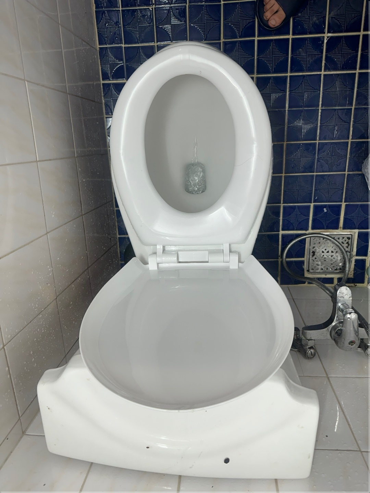
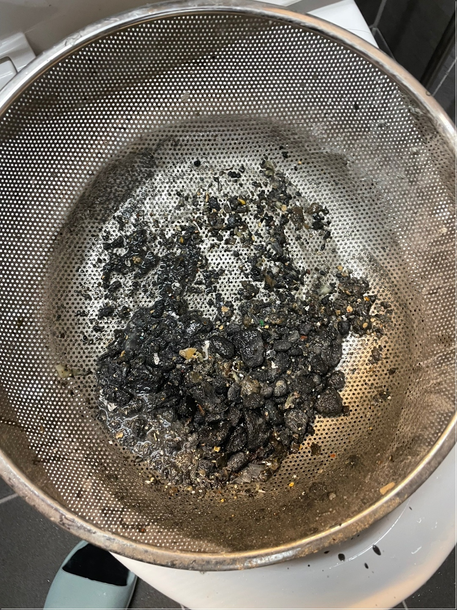
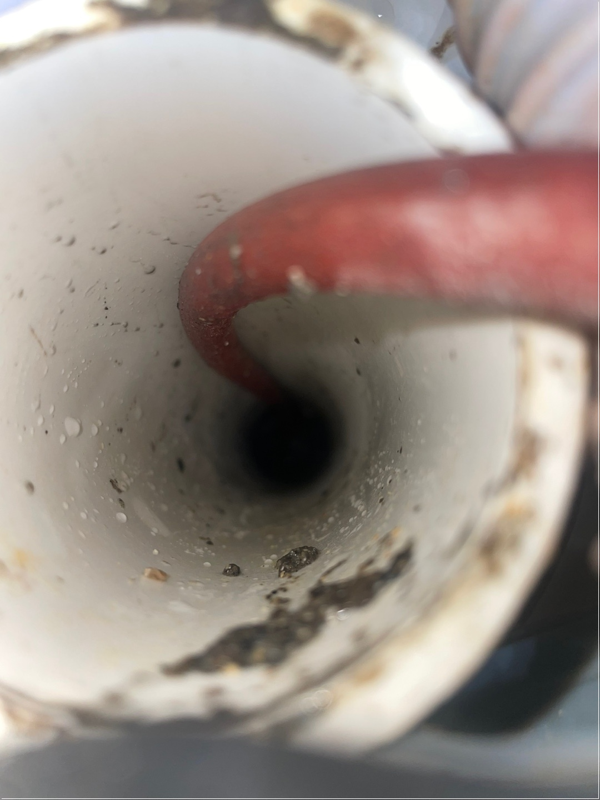

마포구변기막힘 잘 뚫는 전문 업체 찾으시나요?

마포구에 거주하고 계시다면, 한 번쯤은 변기 막힘 문제를 겪어보셨을 거예요. 특히 오래된 빌라나 주택이 많은 지역 특성상 배관 상태가 좋지 않아 자주 막히는 일이 발생하곤 하죠. 간단한 막힘은 집에서 해결할 수도 있지만, 반복되거나 물이 전혀 내려가지 않는다면 전문적인 조치가 필요합니다. 변기가 막히는 가장 흔한 원인은 휴지 과다 사용, 물티슈나 이물질 투입 등인데요. 그 외에도 오래된 배관 내부에 쌓인 찌꺼기나 오염물질이 점차 통로를 좁히며 결국 막히게 되는 경우도 많습니다. 특히 마포구처럼 오래된 건물 비율이 높은 곳은 이런 구조적인 문제로 막힘이 잦은 편입니다.  간단한 방법으로는 70~80도 정도의 따뜻한 물을 부어주거나, 뚫어뻥을 이용한 압력 처리가 있습니다. 베이킹소다와 식초를 혼합해 사용하는 것도 때에 따라 효과를 볼 수 있죠. 그러나 이런 방식들이 모두 통하지 않는다면, 그것은 이미 배관 깊은 곳까지 막혔다는 신호일 수 있어요. 이럴 때는 마포구 변기막힘 전문 업체에 맡기는 것이 훨씬 경제적이고 안전한 선택입니다. 전문가들은 고압세척기, 배관 내시경 등을 통해 정확한 막힘 위치를 진단하고, 재발 방지까지 고려한 시공을 진행합니다. 단순히 물만 뚫는 것이 아니라 배관 내부의 찌꺼기와 이물질을 깨끗하게 제거해주기 때문에 향후 문제도 예방할 수 있습니다. 또한, 막히기 전에 예방하는 습관도 중요합니다. 기름이나 음식물 찌꺼기를 변기에 버리지 않는 것은 기본이고, 정기적으로 뜨거운 물로 배관을 세척하는 것도 좋은 방법입니다. 또, 배수구에 거름망을 설치하면 머리카락이나 이물질이 들어가는 것을 효과적으로 막을 수 있죠. 결국, 마포구 변기막힘 문제는 누구에게나 닥칠 수 있는 일입니다. 그러나 빠르게 대처하고 올바른 조치를 한다면 큰 문제 없이 해결할 수 있어요. 혼자 끙끙 앓지 말고, 이상 징후가 보이면 즉시 전문가의 도움을 받아보세요. 당신의 불편함을 가장 빠르게 해결해 줄 든든한 파트너, 바로 지안홈케어가 있습니다.
셀프 변기 뚫기

살다 보면 한 번쯤은 겪게 되는 하수구 막힘 문제! 🚿 특히 주방, 욕실, 베란다 같은 곳은 자주 사용되는 만큼 쉽게 막히기도 하죠. 물이 천천히 빠지거나, 역류하거나, 갑자기 악취가 올라온다면... 네, 그건 바로 하수구가 "나 좀 살려줘" 하는 신호입니다. 😅
하수구가 막히는 원인은 정말 다양해요.
주방에서는 기름때와 음식물 찌꺼기, 욕실에서는 머리카락과 비누찌꺼기, 세면대에는 치약 찌꺼기까지! 🤯 쌓이고 쌓이다 보면 어느 순간 ‘턱’ 막혀버립니다. 특히 오래된 아파트나 빌라, 주택 등에서는 배관이 좁거나 노후돼서 더 자주 막히는 경우가 많습니다.
그래도 아래 영상을 보고 먼저 시도해보세요👇
화장실이나 주방을 사용하는 도중 갑자기 물이 잘 내려가지 않거나 거품이 역류하고, 코를 찌르는 냄새가 올라온다면 대부분 변기막힘, 싱크대막힘, 또는 하수구막힘일 가능성이 큽니다. 이 세 가지 문제는 각각 원인이 조금씩 다르지만, 결국은 배관 내부에 이물질이 쌓이면서 생기는 현상이에요. 변기막힘은 물티슈, 생리대, 플라스틱 포장지 등 물에 녹지 않는 물질을 변기에 흘려보내는 습관에서 시작됩니다. 대부분은 뚫어뻥이나 따뜻한 물로 1차 처리가 가능하지만, 막힘이 심해지면 물이 역류하거나 변기에서 이상한 소리가 나는 등 심각한 문제로 이어질 수 있어요. 이럴 때는 70~80도의 따뜻한 물을 천천히 부어주고, 압력으로 밀어주는 뚫어뻥을 사용해보세요. 그래도 해결이 되지 않는다면 전문가의 장비가 필요합니다. 싱크대막힘은 주방에서 자주 발생하는 문제로, 기름기 있는 국물이나 음식물 찌꺼기, 커피가루 등을 그대로 흘려보내는 것이 주된 원인입니다. 이러한 물질들은 시간이 지나면서 배관 내부에 쌓이고 굳어져 물의 흐름을 방해하죠. 특히 기름은 식으면서 ‘기름 덩어리’로 변해 배관 벽면에 들러붙게 됩니다. 이럴 땐 베이킹소다와 식초, 뜨거운 물을 활용해 자연 친화적인 방법으로 청소해볼 수 있지만, 고착이 심한 경우에는 고압세척이 필요할 수 있습니다.  하수구막힘은 화장실, 세면대, 욕실, 주방 등 모든 배수가 모이는 지점인 하수관에서 발생합니다. 여러 곳에서 나온 이물질이 한 군데로 모이기 때문에 막히는 속도도 빠르고, 악취도 심각하죠. 욕실 하수구에는 머리카락, 비누 찌꺼기, 때가, 주방 쪽은 음식물과 기름기, 세탁기는 먼지나 실밥이 문제입니다. 특히 오래된 건물의 경우 배관 자체가 노후되어 녹이나 곰팡이, 미생물 슬러지가 쌓이기도 해요. 이런 경우엔 일반적인 청소로는 해결이 어렵고, 고압세척기를 사용한 전문적인 작업이 필요합니다. 이러한 막힘 문제들을 예방하기 위해선 평소 사용 습관이 중요합니다. 변기에는 화장지 외에는 아무것도 버리지 말고, 싱크대에는 거름망 필수! 기름은 절대로 흘려보내지 말고, 정기적으로 뜨거운 물로 배관을 세척해주는 것이 좋아요. 또한 하수구 냄새가 심하거나 물이 느리게 내려가는 조짐이 보인다면, 그게 이미 “막힘의 신호”일 수 있으니 무시하지 말고 빠르게 대처하는 것이 중요합니다.
변기막힘

세상에서 가장 급한 일 중 하나가 뭘까요? 바로... 변기가 막혔을 때입니다. 😨 그 순간만큼은 이 세상의 모든 문제가 사소하게 느껴질 정도로, 눈앞의 현실이 급해져요. 특히 아침에 출근 준비하다가 갑자기 물이 안내려가면... 와 진짜 멘붕이 따로 없죠. ⏰😱 변기막힘은 생각보다 흔한 일이에요. 휴지를 너무 많이 사용했거나, 이물질이 들어갔거나, 오래된 배관 내부에 물때나 찌꺼기가 쌓인 경우가 많습니다. 특히 어린 아이들이 있는 집에서는 장난감이나 물티슈, 생리대 같은 걸 실수로 흘려보내는 경우도 종종 있죠. 🧸🧻 일단 막히면, 대부분 사람들이 시도하는 건 두 가지! 뚫어뻥(플런저)과 뜨거운 물 붓기. 이 방법이 초반엔 어느 정도 효과가 있을 수 있어요. 특히 변기 내부에 고형물이 걸린 경우, 플런저의 압력으로 간단히 해결되기도 하죠. 하지만! 자칫 잘못 사용하면 물이 넘쳐 흐르는 대참사가 생길 수 있으니 주의가 필요해요. 😬💦  또 하나 많이 사용하는 방법은 베이킹소다 + 식초 조합. 이건 기름 때나 찌꺼기에는 도움이 될 수 있지만, 강한 막힘에는 거의 효과 없다고 봐야 해요. 괜히 냄새만 나고 시간만 버릴 수도 있다는 거... 😓 이런 상황에서 가장 안전하고 빠른 해결법은? ✅ 전문 업체에 맡기는 것! 변기막힘 전문업체는 배관 구조를 잘 알고, 상황에 따라 압축기, 스프링 드레인, 고압세척기 등을 사용해서 뿌리부터 해결해줘요. 특히 집이 오래됐거나, 막힘이 반복된다면 이건 단순한 문제가 아니라 배관 내부 구조적 문제일 가능성도 있어요. 이럴 땐 전문가의 진단이 필수입니다. 🎯 그리고 중요한 거 하나! 무조건 ‘싸다’고 해서 아무 업체나 부르면 안 됩니다. 어디선가 “15,000원!” 이런 광고 보셨죠? 막상 불러보면 이것저것 붙여서 10만 원 훌쩍 넘는 경우 많아요. 😤 그래서 미리 가격 투명하고, 후기 좋은 업체인지 체크하고 부르는 게 좋아요. 서울 지역, 특히 마포구, 용산구, 강서구, 서대문구 쪽은 오래된 주택도 많고, 막힘도 잦기 때문에 이 지역 경험 많은 업체에 맡기는 게 훨씬 빠르고 정확합니다! 💪
결론

마포구에서 변기막힘 문제를 겪고 계시다면, 우선 너무 당황하지 마세요! 많은 분들이 “이거 내가 혼자 해결할 수 있을까?” 하고 고민하시는데요, 간단한 막힘이라면 뚫어뻥이나 따뜻한 물, 베이킹소다+식초 조합으로 해결되는 경우도 있지만, 사실 이것도 막힘 정도에 따라 효과가 천차만별이에요. 특히 고질적인 막힘이나 물이 거의 내려가지 않는 상황, 또는 악취가 동반되는 경우는 단순한 막힘이 아니라 배관 내부 깊은 곳에서 문제가 발생했을 가능성이 큽니다. 이럴 때는 혼자 계속 시도하기보다는, 전문적인 장비와 경험을 갖춘 업체에 맡기는 것이 훨씬 빠르고 경제적입니다. 요즘은 유튜브나 블로그를 보고 따라 하시는 분들도 많은데요~ 괜히 더 손대다가 배관이 터지거나 역류까지 생기면 수리비가 눈덩이처럼 불어나기도 해요 😵💫 이런 상황을 미연에 방지하려면 처음부터 믿을 수 있는 업체에 연락하는 것이 가장 현명한 선택입니다. 저희 지안홈케어는 마포구를 포함해 강남, 강서, 용산 등 서울 전 지역을 빠르게 대응하며, 단순한 뚫기 작업부터 고압세척, 배관 내시경 진단까지 모든 배관 문제를 전문적으로 해결합니다. 정확한 진단 + 합리적인 가격 + 깔끔한 마무리, 세 마리 토끼를 다 잡을 수 있어요 🐰🐰🐰 또한, 고객님께 꼭 필요한 작업만 추천드리기 때문에 과잉 청구 걱정도 없습니다. 이미 많은 분들이 만족한 후기와 작업사진으로 검증된 업체이니 막힘 문제로 고민하고 계셨다면 지금 바로 연락 주세요!
하수구가 막히면 물이 안 내려가는 건 물론이고, 쿰쿰한 냄새에 정신까지 혼미해지죠. 😵💫 특히 욕실이나 주방에서 냄새가 올라오면 진짜 스트레스 폭발💥입니다. 하지만 막힌 하수구, 꼭 전문가만 불러야 해결되는 건 아니에요! 오늘은 일상에서 누구나 해볼 수 있는 하수구막힘 꿀팁을 전수할게요. 먼저, 가장 간단한 방법은 뜨거운 물 붓기입니다. 단, 끓는 물은 금물! ❌ 너무 뜨거운 물은 플라스틱 배관을 손상시킬 수 있으니 70~80도 정도의 물을 천천히 붓는 게 포인트예요. 이 방법은 기름 찌꺼기나 비누 거품 같은 가벼운 막힘에 효과가 좋아요. 두 번째는 다들 아는 조합이죠? 베이킹소다 + 식초 콤보! 💥 1컵의 베이킹소다를 하수구에 쏟아붓고, 그 위에 식초를 부으면 화학반응으로 거품이 올라오는데요, 이게 하수관 안쪽까지 들어가 묵은 때를 녹여줍니다. 그 후 10~15분 정도 기다렸다가 따뜻한 물로 마무리해주면 끝! 간단하면서도 꽤 효과적이에요. 세 번째 꿀팁은 거름망 설치! 🕸️ 하수구는 안 막히는 게 제일입니다. 욕실엔 머리카락, 주방엔 음식물, 세탁기엔 실밥 등등... 온갖 이물질이 하수구로 들어가지 않도록 스테인리스 거름망 하나만 설치해도 막힘 확률을 크게 줄일 수 있어요. 요건 그냥 필수템입니다. 마지막으로, 냄새까지 잡고 싶다면? 레몬 껍질이나 커피 찌꺼기를 활용해보세요. 하수구에 넣고 따뜻한 물을 흘려주면 기름기도 닦이고 향도 상쾌해져요. 단, 커피 찌꺼기는 너무 많이 넣으면 오히려 역효과일 수 있으니 소량만! ☕🍋 그래도 안 되면? 😬 그건 이미 DIY의 영역을 넘은 상황! 배관 내부에 기름이 굳었거나, 오래된 오염물이 딱딱하게 굳은 경우엔 고압세척이 필요합니다. 이런 경우엔 전문가에게 맡기는 게 속 편하고 오래갑니다.
FAQ
마포구 변기가 막혔을 때 어떻게 하나요?
1. 70~80도 정도의 따뜻한 물을 붓고 기다려보세요.
2. 뚫어뻥을 이용해 압력으로 뚫어보세요.
3. 베이킹소다+식초 조합도 도움이 됩니다.
4. 해결이 안 될 경우, 마포구 전문 업체 📞010-3463-4474📞로 문의주세요.
마포구 하수구 막힘은 어떤 경우에 고압세척이 필요한가요?
기름때, 머리카락, 비누 찌꺼기, 오래된 오염물질 등으로 배관 내부가 완전히 막혔을 경우에는 고압세척이 필요합니다.
악취가 심하고 물이 전혀 내려가지 않는다면 즉시 고압세척을 고려해야 합니다.
하수구 막힘 원인은 무엇인가요?
주방에선 기름 찌꺼기, 욕실에선 머리카락, 세면대에선 비누 찌꺼기 등이 주 원인입니다.
오래된 배관에는 녹이나 곰팡이, 미생물 슬러지도 문제를 일으킬 수 있어요.
하수구 막힘 방지하는 방법은?
기름은 절대 싱크대에 버리지 말고, 배수구에는 거름망을 설치해 이물질 유입을 줄이세요.
정기적인 뜨거운 물 세척도 도움이 됩니다.
마포구 막힘 해결 범위
| 작업가능지역 | 변기막힘 | 싱크대막힘 | 하수구막힘 |
|---|---|---|---|
| 아현동 | 아현동 변기막힘 | 아현동 싱크대막힘 | 아현동 하수구막힘 |
| 공덕동 | 공덕동 변기막힘 | 공덕동 싱크대막힘 | 공덕동 하수구막힘 |
| 신공덕동 | 신공덕동 변기막힘 | 신공덕동 싱크대막힘 | 신공덕동 하수구막힘 |
| 도화동 | 도화동 변기막힘 | 도화동 싱크대막힘 | 도화동 하수구막힘 |
| 용강동 | 용강동 변기막힘 | 용강동 싱크대막힘 | 용강동 하수구막힘 |
| 토정동 | 토정동 변기막힘 | 토정동 싱크대막힘 | 토정동 하수구막힘 |
| 마포동 | 마포동 변기막힘 | 마포동 싱크대막힘 | 마포동 하수구막힘 |
| 대흥동 | 대흥동 변기막힘 | 대흥동 싱크대막힘 | 대흥동 하수구막힘 |
| 염리동 | 염리동 변기막힘 | 염리동 싱크대막힘 | 염리동 하수구막힘 |
| 노고산동 | 노고산동 변기막힘 | 노고산동 싱크대막힘 | 노고산동 하수구막힘 |
| 신수동 | 신수동 변기막힘 | 신수동 싱크대막힘 | 신수동 하수구막힘 |
| 현석동 | 현석동 변기막힘 | 현석동 싱크대막힘 | 현석동 하수구막힘 |
| 구수동 | 구수동 변기막힘 | 구수동 싱크대막힘 | 구수동 하수구막힘 |
| 창전동 | 창전동 변기막힘 | 창전동 싱크대막힘 | 창전동 하수구막힘 |
| 상수동 | 상수동 변기막힘 | 상수동 싱크대막힘 | 상수동 하수구막힘 |
| 하중동 | 하중동 변기막힘 | 하중동 싱크대막힘 | 하중동 하수구막힘 |
| 신정동 | 신정동 변기막힘 | 신정동 싱크대막힘 | 신정동 하수구막힘 |
| 당인동 | 당인동 변기막힘 | 당인동 싱크대막힘 | 당인동 하수구막힘 |
| 서교동 | 서교동 변기막힘 | 서교동 싱크대막힘 | 서교동 하수구막힘 |
| 동교동 | 동교동 변기막힘 | 동교동 싱크대막힘 | 동교동 하수구막힘 |
| 합정동 | 합정동 변기막힘 | 합정동 싱크대막힘 | 합정동 하수구막힘 |
| 망원동 | 망원동 변기막힘 | 망원동 싱크대막힘 | 망원동 하수구막힘 |
| 연남동 | 연남동 변기막힘 | 연남동 싱크대막힘 | 연남동 하수구막힘 |
| 성산동 | 성산동 변기막힘 | 성산동 싱크대막힘 | 성산동 하수구막힘 |
| 중동 | 중동 변기막힘 | 중동 싱크대막힘 | 중동 하수구막힘 |
| 상암동 | 상암동 변기막힘 | 상암동 싱크대막힘 | 상암동 하수구막힘 |
| 서강동 | 서강동 변기막힘 | 서강동 싱크대막힘 | 서강동 하수구막힘 |
| 망원1동 | 망원1동 변기막힘 | 망원1동 싱크대막힘 | 망원1동 하수구막힘 |
| 망원2동 | 망원2동 변기막힘 | 망원2동 싱크대막힘 | 망원2동 하수구막힘 |
| 성산1동 | 성산1동 변기막힘 | 성산1동 싱크대막힘 | 성산1동 하수구막힘 |
| 성산2동 | 성산2동 변기막힘 | 성산2동 싱크대막힘 | 성산2동 하수구막힘 |